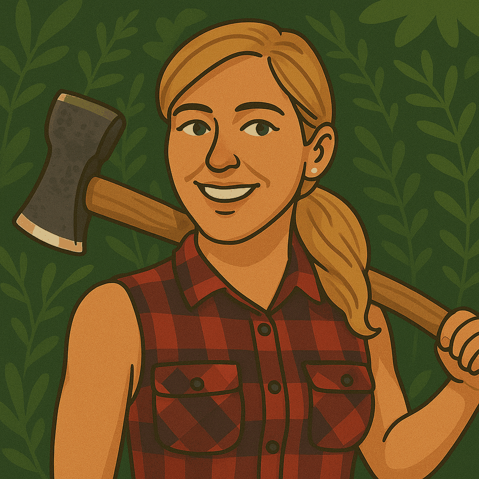

丛林技艺影响者
在数字时代，丛林技艺领域的知识传播有了新的途径。一批杰出的内容创作者通过社交媒体、视频平台和网络社区，让更多人了解并爱上了这门古老的技艺。
他们不仅在技术上精通丛林生存技能，更具备讲述故事、创作内容和连接社区的能力。通过分享自己的经验、技巧和对自然的热爱，他们激发了数百万人走进户外、学习传统技能的兴趣。
这些影响者搭建了传统与现代之间的桥梁，让丛林技艺不再是隐藏在深林中的秘密，而成为广泛传播的生活智慧和文化遗产。
由Cursor自动生成。

丛林技艺影响者综合报告
1. Thoren Bradley

简介
索伦·布拉德利（Thoren Bradley）是一位在社交媒体上广受欢迎的户外技能和斧头使用专家。他因其精湛的劈柴技巧和关于户外生活的内容而在TikTok和Instagram等平台上积累了数百万粉丝。布拉德利曾是专业运动员，后来转向户外技能教学和内容创作。
特色内容
- 斧头使用技巧教学视频
- 传统木工和手工制作内容
- 户外生存和丛林技能演示
- 可持续生活方式的分享
影响力
- 将传统户外技能带入主流社交媒体：布拉德利的内容让年轻一代重新认识到传统户外技能的价值和魅力。
- 提升斧头技艺的普及度：他的精确斧头使用演示激发了许多人学习这一传统工具的兴趣。
- 推广可持续和自给自足的生活理念：通过展示如何利用自然资源和传统技能，他倡导了更可持续的生活方式。
2. Ayal Komod

简介
阿亚尔·科莫德（Ayal Komod）是一位以色列裔的野外生存专家和社交媒体影响者。他以在极端环境中的生存技能演示和教学视频而闻名。科莫德拥有丰富的军事背景和荒野生存经验，将这些专业知识转化为易于理解的教育内容。
特色内容
- 极端环境下的避难所建造教程
- 野外找水和净水技术
- 自然导航和定向训练
- 应急生存装备评测和使用指南
影响力
- 专业生存技能的大众化传播：将专业级别的生存技能转化为普通人可以理解和学习的内容。
- 跨文化生存知识的整合与分享：融合来自不同文化和地区的生存智慧，创造了独特的教学方法。
- 生存准备意识的提升：通过实际演示和教学，提高了公众对应急准备重要性的认识。
3. Rune Bertram

简介
鲁内·伯特拉姆（Rune Bertram）是一位挪威的丛林技能专家和社交媒体创作者。他专注于北欧传统户外技能和极地环境中的生存技术。伯特拉姆将北欧的户外传统与现代丛林技能相结合，创建了独特的教学内容。
特色内容
- 北欧传统木工和手工艺演示
- 寒冷环境中的火种制作和火堆维持技术
- 传统滑雪和雪地穿越技能
- 极地生存装备制作和使用
影响力
- 北欧传统户外技能的现代传承：将几代人传承的北欧生存智慧通过现代媒体传播给全球观众。
- 冬季和寒冷环境生存知识的专业分享：填补了许多生存教育中关于极寒环境生存的知识空白。
- 可持续的北欧生活理念推广：通过内容展示了北欧人与自然和谐共处的传统理念。
4. The Revenant

简介
"The Revenant"（还魂者）是社交媒体上的一位神秘丛林技能创作者，他因其高质量的原始技术演示视频而闻名。不同于许多展示个人形象的创作者，"The Revenant"侧重于技能本身，很少露面，让观众将注意力完全集中在手工艺和技术上。
特色内容
- 原始技术复原和演示
- 无现代工具的避难所建造
- 传统火种制作方法
- 石器和骨器工具制作
影响力
- 原始技术的现代复兴：通过精美的视频内容，激发了公众对古老技术的兴趣和尊重。
- 无言教学的艺术：展示了如何通过视觉演示而非口头解释来有效传授复杂技能。
- 考古学知识的普及：将考古学研究成果转化为实践演示，增进了公众对人类技术发展历史的理解。
5. Will Lord

简介
威尔·洛德（Will Lord）是英国著名的史前技能专家和教育者。他出生于布特瑟山（Butser Ancient Farm）实验考古站，从小浸润在史前技术复原的环境中。洛德专注于石器时代和青铜时代的技能复原和教学，包括火种制作、石器工具制作、弓箭制造等。
特色内容
- 史前工具和武器制作教程
- 古代火种技术演示
- 传统弓箭制作和使用
- 史前生活技能工作坊和在线课程
影响力
- 实验考古学的普及：将专业的考古学研究转化为公众可参与的活动和内容。
- 史前技能的系统化教学：开发了一套完整的教学体系，使古老技能的学习变得有序和可行。
- 文化遗产的活态保护：通过实践和教学，保存了可能失传的史前技能和知识。
6. Cimber Tom

简介
辛伯·汤姆（Cimber Tom）是德国的传统木工和丛林技能专家，因在YouTube和Instagram上分享高质量的传统手工木工内容而受到广泛关注。他专注于使用传统工具进行木工创作，特别是斧头和手工刀具的使用技巧。
特色内容
- 传统斧头工艺和使用技巧
- 绿色木工项目教程
- 手工木制器具制作
- 传统丛林营地建设
影响力
- 传统木工工具的现代复兴：通过展示传统工具的效能和美感，推动了这些工具在现代木工中的应用。
- 精益求精的工艺精神传播：他对细节的关注和对完美的追求，展示了传统工艺中的匠人精神。
- 可持续木工实践的倡导：推广了使用本地材料和传统方法的可持续木工理念。
7. John Plant

简介
约翰·普兰特（John Plant），又称"原始技术"（Primitive Technology），是来自澳大利亚的原始技术专家和YouTube创作者。他在不使用任何现代工具和材料的情况下，从零开始建造避难所、工具和武器，并在他的频道上记录整个过程。
特色内容
- 原始避难所建造系列
- 石器和粘土工具制作
- 原始冶金和陶器烧制
- 狩猎工具和农具制作
影响力
- 原始技术视频类型的开创者：创立了一种全新的内容形式，影响了众多后来的创作者。
- 无声教学的力量：通过纯视觉展示而非口头解释，创造了一种独特而有效的教学方式。
- 技术进化过程的直观展示：通过他的项目系列，观众可以直观了解人类技术从最原始状态逐步发展的过程。
8. Ernest Hemingway

简介
欧内斯特·海明威（Ernest Hemingway，1899-1961）是美国文学巨匠，同时也是户外运动、狩猎和探险的热衷者。虽然他主要以作家身份闻名，但他对户外生活的热爱和描写对丛林技能和生存文化产生了深远影响，成为许多户外爱好者的精神偶像。
特色内容
- 《老人与海》等融入自然主题的文学作品
- 非洲狩猎和探险记录
- 关于钓鱼和户外生活的散文和报道
- 将户外经验融入文学创作的独特方式
影响力
- 户外生活的文学表达：通过文学作品，将户外体验和人与自然的关系提升到哲学和精神层面。
- 男性气质与户外技能的联结：塑造了一种将户外技能与坚韧、独立等品质联系起来的文化形象。
- 自然写作的典范：他的作品成为后来自然文学和户外写作的重要参考和灵感来源。
9. Nicole

简介
妮可（Nicole）是一位在社交媒体平台上崭露头角的女性丛林技能影响者，以打破户外技能领域的性别刻板印象而闻名。她专注于展示女性在丛林生存、狩猎和野外技能方面的能力，同时融入现代环保意识和可持续生活理念。
特色内容
- 女性视角的野外生存技能教程
- 适合各种体型和力量水平的装备使用方法
- 结合传统技能与现代环保理念的内容
- 鼓励女性参与户外活动的励志分享
影响力
- 性别多元化的推动：通过自身示范，展示了丛林技能不分性别，鼓励更多女性参与这一传统上男性主导的领域。
- 包容性户外教育：开发并分享了适合不同体型、力量和经验水平人群的技能和方法。
- 环保与传统技能的结合：将现代环保意识与传统生存技能相结合，创造了具有当代相关性的内容。
丛林技艺影响者共同特点分析
通过对这些丛林技艺影响者的研究，我们可以总结出以下共同特点：
- 跨媒体传播能力：这些影响者善于利用各种数字平台（如YouTube、Instagram、TikTok等）传播知识，适应不同平台的内容形式和受众特点。
- 视觉叙事的专业性：他们普遍具备出色的视觉内容创作能力，能将复杂的技能通过清晰、吸引人的视频和图片呈现出来。
- 传统与现代的桥梁作用：这些影响者成功地将古老的技能和知识转化为现代人能理解和欣赏的形式，搭建了传统与现代之间的桥梁。
- 专业知识与内容创作的平衡：他们不仅精通自己领域的专业技能，还掌握了内容创作、故事讲述和受众互动的技巧。
- 独特个人风格的塑造：每位影响者都发展出了独特的个人品牌和风格，无论是通过特定的技术专长、教学方法还是视觉风格。
- 社区建设的重视：除了单向传播内容，他们还积极培育粉丝社区，创造互动机会，形成围绕共同兴趣的社群。
- 商业模式的创新：许多影响者成功地将自己的专业知识转化为可持续的职业，通过课程、装备、书籍或赞助等多种渠道实现价值。
- 教育使命感：尽管平台和方法各异，这些影响者普遍怀有传递知识、保护传统技艺的使命感，将教育作为核心目标之一。
这些共同特点使他们能在数字时代有效地传播丛林技艺知识，影响数百万人重新连接自然和传统技能，同时也为传统手工艺和户外技能在现代社会中找到了新的存在形式和价值表达。